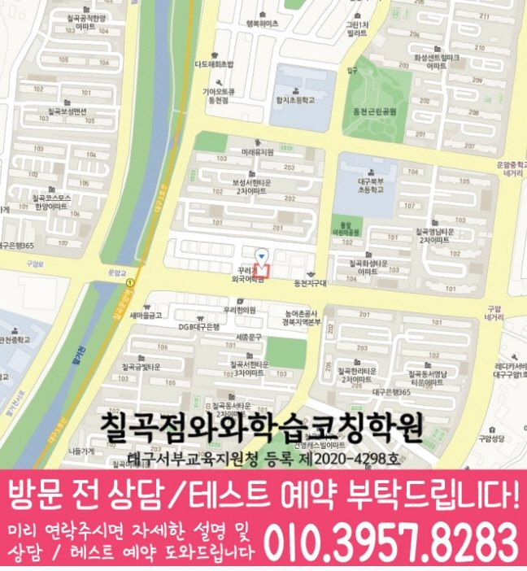

Elementary school Korean · English · Math
칠곡 초등학생 국영수학원
칠곡 초등학생 국영수학원 선택 전 교과 진도와 기초 학습 자료, 최근 오답과 과목별 가능 학년, 센터 위치·비용 확인 기준을 안내합니다.
01 Quick answer
칠곡에서 먼저 확인할 내용
칠곡에서 초등학생 국영수학원을 찾는다면 와와학습코칭센터 칠곡점의 과목별 가능 학년을 먼저 확인하세요. 제공된 초등학교 참고 자료와 학생의 실제 교재를 대조하고, 학생의 실제 풀이 기록에 맞게 국어·영어·수학의 막힌 원인을 나눈 뒤 실행 가능한 주간 계획을 정해야 합니다.
대표 학생 상황
세 과목의 과제 순서와 오답 복습 시점을 스스로 정리하기 어려운 초등학생


010-6839-8283상담 전 핵심 안내
칠곡에서 초등학생 학원을 찾는 학생을 위해 영어·수학뿐 아니라 국어 학습까지 함께 설계하는 학습 흐름을 안내합니다. 칠곡 다음 학습 단계에서는 다시 풀기 결과를 바탕으로 보완할 단원을 구분합니다. 칠곡 초등학생의 국어·영어·수학 계획은 세 과목을 모두 늘리기 전에 우선순위를 나누는 과정이 필요합니다. 칠곡 초등학생 국영수학원 기준에서 처음 판단할 지점은 한 과목 성적만이 아니라 독해, 어휘, 연산, 풀이 습관이 함께 관리되는지입니다.
학습 순서를 정할 때 확인할 내용
칠곡 수업 계획에서는 단원별 이해도를 바탕으로 학습 상태를 구체적으로 확인합니다. 처음부터 많은 문제로 밀어붙이지 않고, 단원 이해도와 풀이 습관을 먼저 확인해 학생에게 맞는 학습 순서를 제공합니다.
영어·수학·국어 균형 학습. 영어는 어휘·문장 읽기·문법 기초를 점검하고, 수학은 개념과 유형을 분리해 연습하며, 국어는 문해력·서술형 사고를 함께 다룹니다.
풀이 과정 기록을 확인하는 칠곡 가정은 수업 형태보다 아이가 질문하고 피드백을 받는 간격을 먼저 살펴야 합니다. 칠곡 초등학생 학습 점검의 국어·영어·수학 관리는 현재 학년의 초등학생이 화면이나 교실 어디에서 배우든 풀이 흔적, 과제 완료, 다음 복습 범위가 남아야 의미가 있습니다. 칠곡 국어·영어·수학 학습 계획에서 학습 관리는 수업 출석만 확인하는 일이 아니라, 아이가 배운 내용을 어떤 문제에서 사용했고 어느 부분을 다시 봐야 하는지 남기는 과정입니다. 학습 기록을 볼 때는 문제 수보다 오답 재풀이 날짜와 질문한 내용을 살펴보세요.
질문과 기록으로 확인하는 학습 과정
이해가 되게 설명합니다. 학생이 어디에서 막히는지 질문과 풀이 과정을 통해 확인하고, 필요한 개념을 다시 연결해 혼자 다시 풀 수 있는지를 확인합니다.
학습 태도까지 함께 관리합니다. 칠곡 수업 내용을 점검할 때는 오답 원인을 바탕으로 다음 학습 계획을 조정합니다.
칠곡 초등학생 학습 점검의 목표는 학원 안에서만 문제를 맞히는 것이 아니라 집에서도 아이가 오늘 배운 내용을 꺼내 보는 상태를 만드는 것입니다. 칠곡에서 복습을 미루는 아이는 국어·영어·수학의 다음 행동을 한 가지씩 정하는 편이 좋습니다. 같은 공부 고민이 있는 경우에는 스스로 공부하라는 말만으로는 부족하므로, 칠곡 초등학생의 국어·영어·수학 학습 점검을 마친 뒤 무엇을 표시하고 무엇을 부모에게 보여 줄지 정해 두어야 합니다. 혼자 공부하게 두기보다 아이가 할 수 있는 부분과 확인이 필요한 부분을 나누는 과정이 중요합니다.
칠곡 학교 일정과 현재 교재를 함께 확인하기
센터 안내와 비교할 때, 상담 준비를 위해 제공된 초등학교 목록은 관음초입니다. 상담 자료를 정리하면, 이는 수업 가능 학교를 단정하는 자료가 아니라 학생의 실제 범위와 과제를 확인하기 위한 참고 정보입니다.
실제 학습 범위를 확인하면, 교과 진도·알림장·단원평가 자료를 준비한 뒤 국어의 읽기 근거, 영어의 문장 적용과 수학의 풀이 과정을 따로 확인하세요. 학생 자료를 먼저 펼쳐 보면, 칠곡 상담에서는 이 기록이 과목별 우선순위로 이어지는지가 핵심입니다.
개념 확인부터 오답 복습까지
1. 현재 수준 확인. 학년, 학교 진도, 최근 학습 결과를 바탕으로 부족 단원과 자주 틀리는 유형을 파악합니다.
2. 개념 정리와 단계별 학습. 바로 문제풀이로 넘어가기보다 핵심 개념을 먼저 정리한 뒤, 대표 유형부터 응용 문제까지 단계적으로 훈련합니다.
3. 오답 관리와 학습 피드백. 틀린 이유를 유형별로 정리하고 다음 학습에서 어떻게 접근해야 하는지 방향을 잡아 같은 실수를 줄입니다.
칠곡 초등학생 학습 과정을 찾는 이유가 예비 중등 준비라면 초등 단계의 목표를 지나치게 앞당길 필요는 없습니다. 대구광역시 북구 칠곡에서 비슷한 학년대의 초등학생에게는 국어 지문을 끝까지 읽는 힘, 영어 문장을 누적해 복습하는 습관, 수학 풀이를 말로 설명하는 연습이 먼저입니다. 이와 비슷한 학습 흐름을 보이는 아이는 현재 수준보다 많은 문제량을 갑자기 늘리면 자신감이 흔들릴 수 있으므로, 칠곡 국어·영어·수학 학습 계획 상담에서는 현재 학년의 빈칸을 정리한 뒤 다음 단원으로 넘어가는 순서를 확인해야 합니다. 중학교 준비는 이름만 앞세우기보다 아이가 질문하고 오답을 다시 보는 생활 습관으로 이어져야 합니다.
학년 변화에 따라 달라지는 점검 항목
초등 저학년. 칠곡 학습 과정에서는 다시 풀기 결과를 바탕으로 학습 상태를 구체적으로 확인합니다. 수업 후 복습 루틴과 오답 정리 방식까지 학습 태도를 함께 형성합니다.
초등 고학년. 학교 진도에 맞춰 개념을 재정리하고, 수학·영어 유형을 반복 점검합니다. 칠곡 복습 계획에서는 과제 이행 기록을 바탕으로 학습 상태를 구체적으로 확인합니다.
영어·수학 집중. 칠곡 학습 순서를 정할 때는 과제 이행 기록을 바탕으로 복습 시점을 정합니다. 실수 패턴을 줄이는 훈련과 시험 대비 복습 계획을 함께 수립합니다.
국어·문해력 보강. 지문 이해, 핵심 내용 정리, 문제 풀이 전략을 단계적으로 연습합니다. 서술형·서평형 문항 대비를 위해 근거 찾기와 표현 훈련을 진행합니다.
칠곡 지역 센터는 초등학생의 현재 학습 상태를 기준으로 영어·수학·국어 학습을 단계별로 정리하고, 상담을 통해 현재 수준에 맞춘 학습 방향을 자세히 정리합니다.
02 Consultation examples
칠곡 학부모 상담 상황 예시
아래 내용은 실제 고객 후기나 성적 결과가 아니라, 상담에서 확인할 질문을 이해하기 위한 상황 예시입니다.
최근 학교 학습 준비가 한 과목에 치우친 칠곡 초등학생을 가정했습니다. 학부모는 현재 교재와 학교 자료를 바탕으로 국어·영어·수학의 병목을 따로 듣고, 가정에서 확인할 기록을 정리합니다.
칠곡에서 제공된 초등학교 참고 정보인 관음초의 목록과 학생의 실제 학교 자료를 대조해 질문하는 상황입니다. 학부모는 학교명 자체보다 시험 범위와 수행평가 일정이 수업 계획에 반영되는지, 다음 확인 시점이 언제인지 기록합니다.
03 FAQ
칠곡 초등학생 국영수학원 자주 묻는 질문
학부모님이 상담 전에 자주 확인하는 내용을 질문과 답변으로 정리했습니다.
칠곡 초등학생 국영수학원 선택 전 학생의 어떤 습관을 살펴야 하나요?
배운 내용을 말로 설명하거나 틀린 문제를 다시 풀기 어렵다면 최근 풀이 흔적과 알림장을 함께 확인하세요. 칠곡 센터의 가능 학년은 등록 전에 다시 확인해야 합니다.
칠곡에서 세 과목 계획을 한꺼번에 세워도 괜찮을까요?
칠곡 상담에서는 먼저 최근 자료에서 가장 시급한 과목을 찾고, 나머지 과목의 최소 복습 시간을 남겨야 합니다. 오답은 설명 직후가 아니라 일정 시간이 지난 뒤 다시 풀어 적용 여부를 확인합니다. 초등 교과에서는 읽기·어휘·계산 기초와 스스로 공부를 시작하는 습관을 함께 살핍니다.
칠곡 초등학교 참고 정보는 상담에서 어떻게 활용하나요?
제공 목록에서 관음초 등을 확인할 수 있지만 모든 학교의 수업 가능 여부를 뜻하지는 않습니다. 실제 범위와 과제 자료를 준비해 상담에서 확인하는 편이 정확합니다. 상담에는 알림장과 단원평가처럼 학생이 실제 사용하는 교과 자료를 준비하는 편이 좋습니다.
칠곡 수업 시간표와 교습비 자료는 상담 전에 볼 수 있나요?
먼저 실제 방문 위치를 위 센터 확인 정보에서 확인할 수 있습니다. 센터별 교습비 확인 버튼에서 제공 자료를 볼 수 있습니다. 이후 칠곡 통학 시간과 초등학생 과목 운영 범위를 센터 상담에서 대조하세요.
04 Continue
칠곡 페이지 이동
카테고리 전체 지역 또는 앞뒤 지역 안내로 이동할 수 있습니다.